summary(iris)
#> Sepal.Length Sepal.Width Petal.Length Petal.Width
#> Min. :4.300 Min. :2.000 Min. :1.000 Min. :0.100
#> 1st Qu.:5.100 1st Qu.:2.800 1st Qu.:1.600 1st Qu.:0.300
#> Median :5.800 Median :3.000 Median :4.350 Median :1.300
#> Mean :5.843 Mean :3.057 Mean :3.758 Mean :1.199
#> 3rd Qu.:6.400 3rd Qu.:3.300 3rd Qu.:5.100 3rd Qu.:1.800
#> Max. :7.900 Max. :4.400 Max. :6.900 Max. :2.500
#> Species
#> setosa :50
#> versicolor:50
#> virginica :50
#>
#>
#> 5 graphics 入门
不是把每个绘图函数都挨个讲一遍，也不是把它们统统归纳总结，而是比较深入地介绍一、两种图形，一、两个例子，重点阐述 Base R 的绘图特点，使用图形时，注意图形本身的作用，最终，希望读者能够达到举一反三的效果。
基础绘图系统。相比于 ggplot2 和 lattice，graphics 制作示意图是优势。
5.1 绘图基础
利用点、线等基础元素从零开始绘图。
5.1.1 plot()
本节将主要基于鸢尾花数据集介绍 R 语言基础绘图系统，该数据集最早来自埃德加·安德森，后来，被罗纳德·费希尔在介绍判别分析的论文中用到，从而，流行于机器学习社区。鸢尾花是非常漂亮的一种花，在统计和机器学习社区家喻户晓，更别提在植物界的名声。其实，远不止于此，在绘画艺术界也是如雷贯耳，印象派大师文森特·梵高画了一系列鸢尾花作品。万紫千红，但能入画的不多，故而，鸢尾花更显高雅。在生命最后的一段日子里，梵高受精神病折磨，在法国普罗旺斯的圣·雷米医院里，唯有盛开的鸢尾花陪着他，最著名的《星月夜》就是在这时候创作出来的。下面先让我们一睹鸢尾花芳容，图片来自维基百科鸢尾花词条。
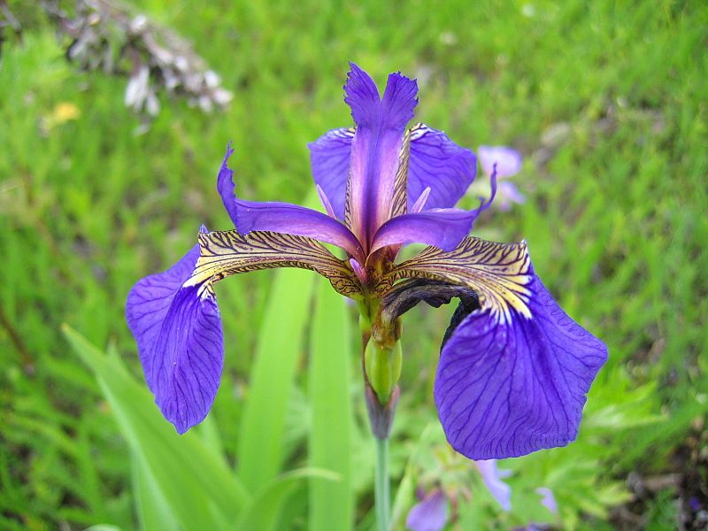
鸢尾花数据集已经打包在 R 软件中，而且默认已经加载到命名空间，下面用函数 summary() 查看其概况。
函数 plot() 采用公式语法可以快速作图。
plot(Sepal.Length ~ Sepal.Width, data = iris)
plot(iris$Sepal.Width, iris$Sepal.Length, panel.first = grid())
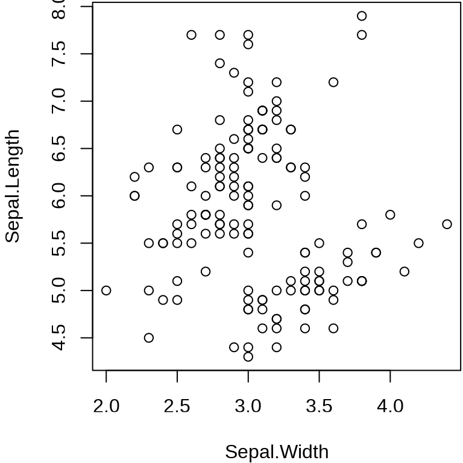
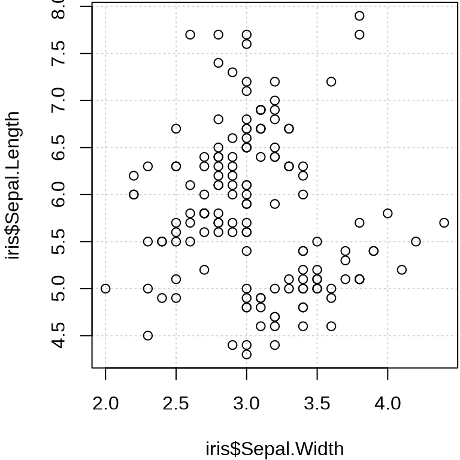
plot()
函数 plot() 是一个泛型函数，传递不同类型的参数值会调用不同的绘图方法，而不同的绘图方法的参数是不同的。当采用公式语法绘图时，会自动调用函数 plot.formula() ，此时，参数 panel.first 就不起作用。当不使用公式语法时，会调用函数 plot.default() ，此时，参数 panel.first 就起作用，利用该参数可以添加背景参考线。
5.1.2 标签
函数 plot() 的参数 xlab 、ylab 和 main 可以分别设置坐标轴横、纵标签和图主标题。
plot(
Sepal.Length ~ Sepal.Width, data = iris,
xlab = "Sepal Width", ylab = "Sepal Length",
main = "Edgar Anderson's Iris Data"
)
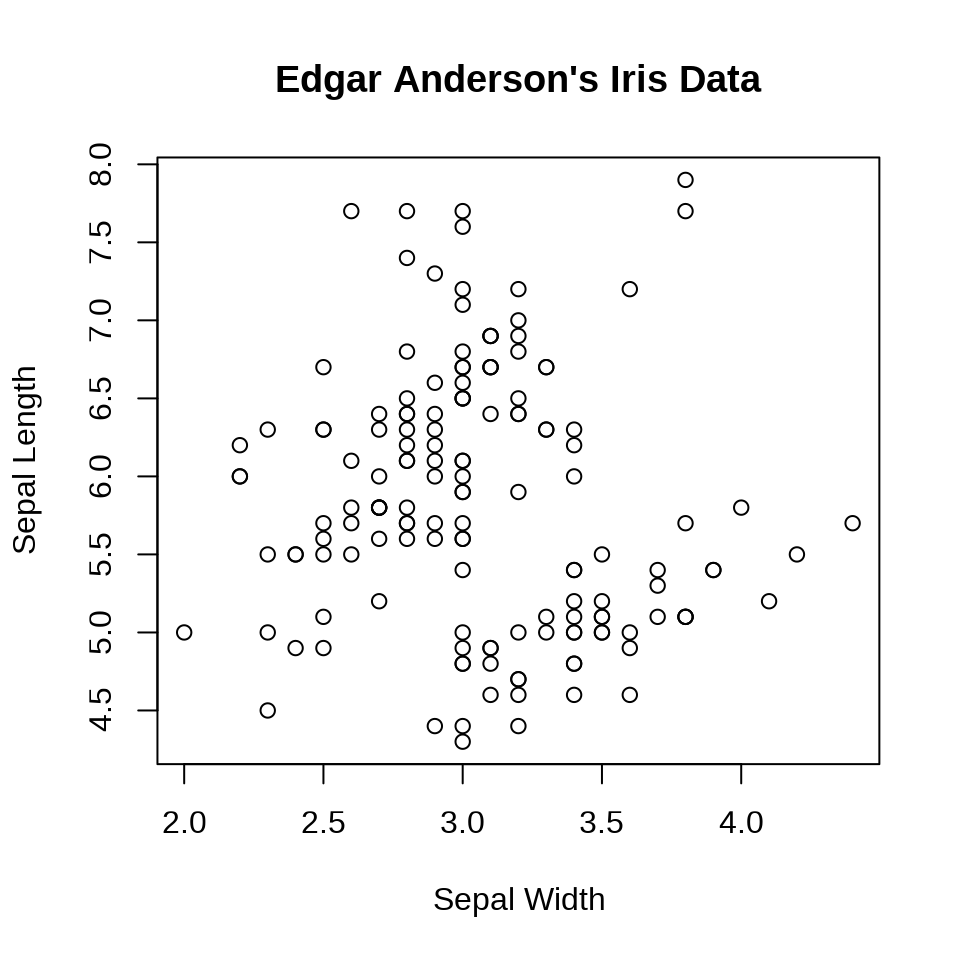
5.1.3 字体
作图函数 plot() 和 title() 都有参数 family ，设置该参数可以调整图形中的字体。下 图 5.4 的横纵坐标轴标签和图标题设为宋体，坐标轴刻度标签设为无衬线字体。
plot(Sepal.Length ~ Sepal.Width, data = iris, ann = FALSE, family = "sans")
title(
xlab = "萼片宽度", ylab = "萼片长度",
main = "埃德加·安德森的鸢尾花数据", family = "Noto Serif CJK SC"
)
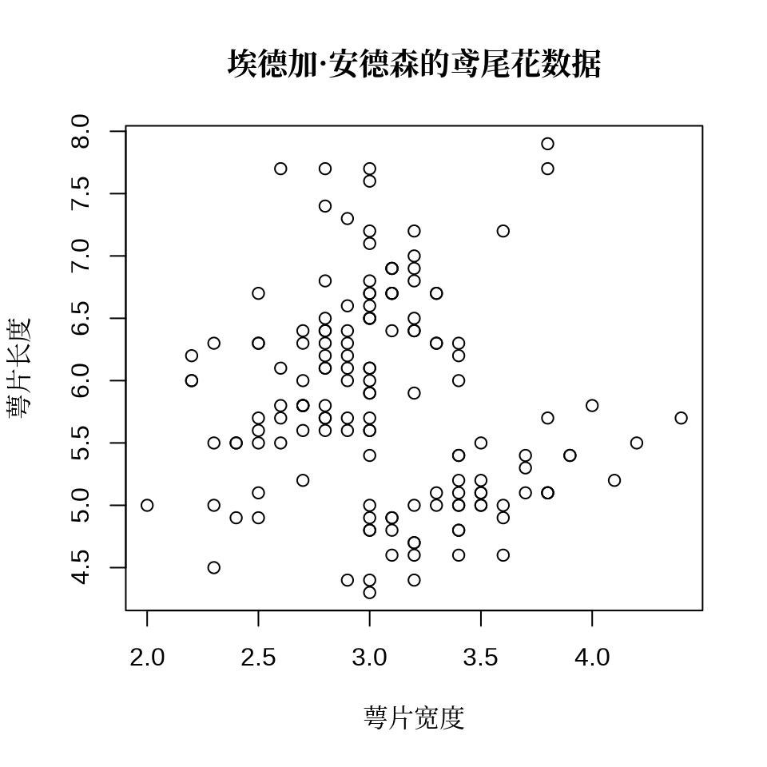
5.1.4 分组
分组有两种方式，其一按照数据中的分类变量分组，其二按照一定的规则分组。而图形表达的方式可以借助颜色或图形元素的样式。
函数 plot() 的参数 col 和 pch 都可以用来分组，前者通过颜色，后者通过点的类型。简单起见，将数据集 iris 中的 Species 列传递给参数 col ，实现不同种类的鸢尾花配以不同的颜色。
plot(Sepal.Length ~ Sepal.Width, data = iris, col = Species, pch = 16)
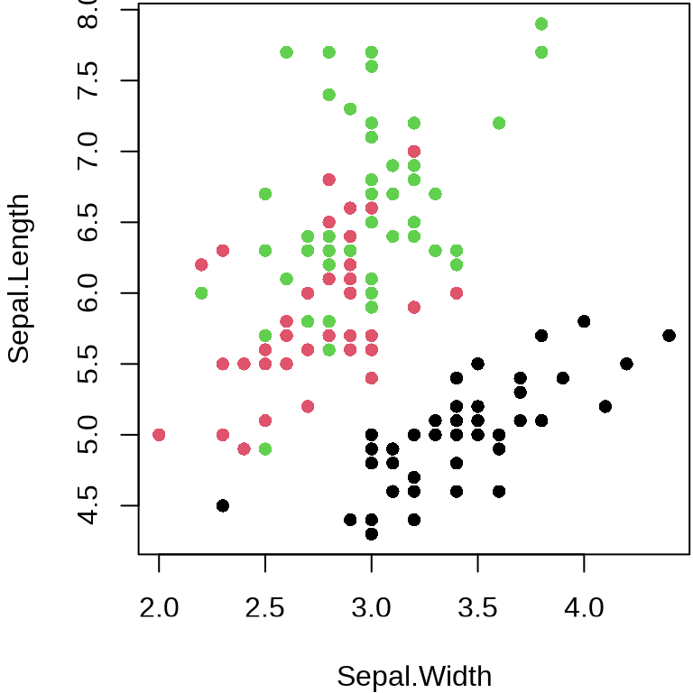
下面采用一个简单规则将数据分成两组，将鸢尾花中 setosa 山毛榉类型且 Sepal.Length 萼片长度大于 5 厘米的分成一组，以红色填充散点代表这部分数据，与余下的散点形成对比，达到区分的目的。
plot(Sepal.Length ~ Sepal.Width, data = iris)
points(Sepal.Length ~ Sepal.Width, data = iris,
col = "#EA4335", pch = 16,
subset = Species == "setosa" & Sepal.Length > 5
)
5.1.5 配色
经过探查，知道数据集 iris 中的 Species 列有三种取值。调用函数 palette() 设置一个超过 3 种颜色的调色板可以实现自定义配色。首先来看看当前调色板的颜色。
palette()
#> [1] "black" "#DF536B" "#61D04F" "#2297E6" "#28E2E5" "#CD0BBC"
#> [7] "#F5C710" "gray62"一共是 8 种颜色，效果预览见 图 5.7 。
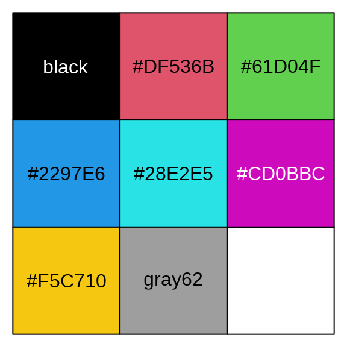
设置新的调色板也是用函数 palette() ，参数 value 设置新的颜色值向量，下面依次是红、蓝、绿、黄四种颜色。
palette(value = c("#EA4335", "#4285f4", "#34A853", "#FBBC05"))函数 plot() 的调色板默认来自函数 palette() ，经过上面的调整，同一行绘图代码出来不同的效果，即 图 5.5 变成 图 5.8 。
plot(Sepal.Length ~ Sepal.Width, data = iris, col = Species, pch = 16)
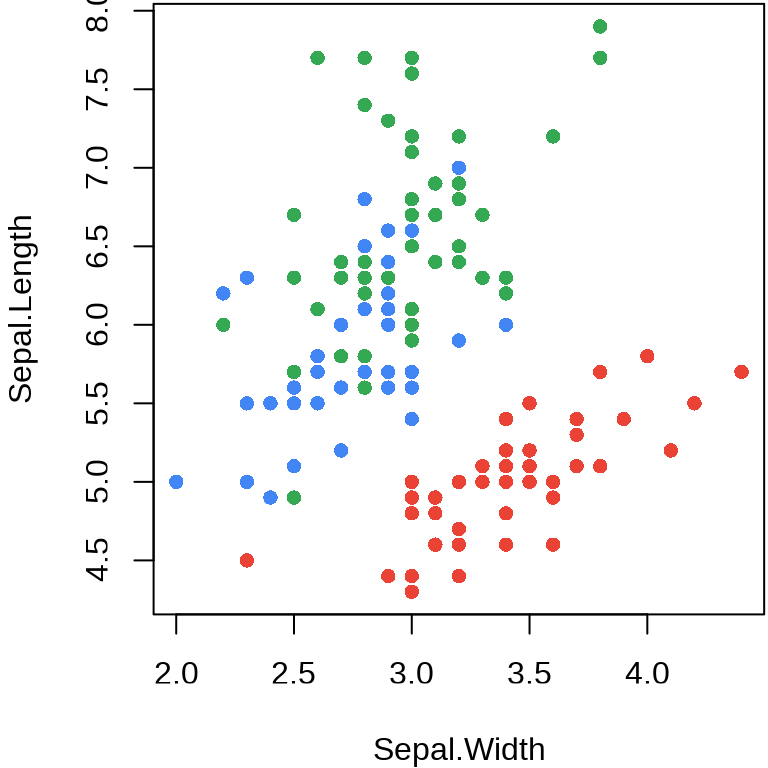
用户也可自定义调色板，先选取一些满意的颜色，然后用函数 colorRampPalette() 生成调色板。
jet.colors <- colorRampPalette(c("#00007F", "blue", "#007FFF", "cyan",
"#7FFF7F", "yellow", "#FF7F00", "red", "#7F0000"))
filled.contour(volcano, color.palette = jet.colors)
Lab.palette <- colorRampPalette(c("red", "orange", "blue"), space = "Lab")
filled.contour(volcano, color.palette = Lab.palette)
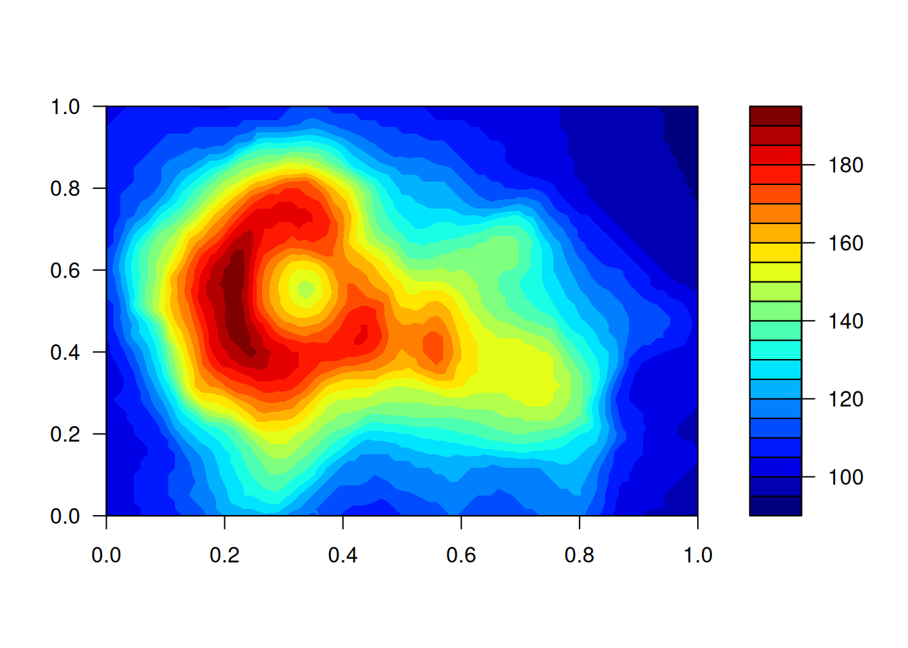
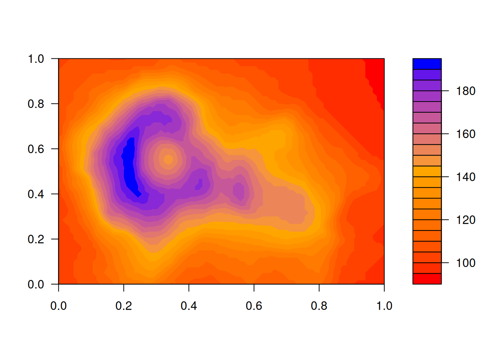
看到这个图立马能让人想到 10 年前在学校里用过的 Matlab 里的绘图工具。不同颜色之间的过渡非常糟糕，一点也不平滑，视觉刺激很强，导致图形本身要传递的信息被冲淡了。换了调色板后，整套配色显得柔和多了，不同颜色之间过渡自然，图形中要表达的重点突出。
5.1.6 注释
函数 text() 可以在图上任意位置添加文本或公式。下图在位置 (4,6.5) 处添加红色的文字 flower。
plot(Sepal.Length ~ Sepal.Width, data = iris)
text(x = 4, y = 6.5, labels = "flower", col = "#EA4335")
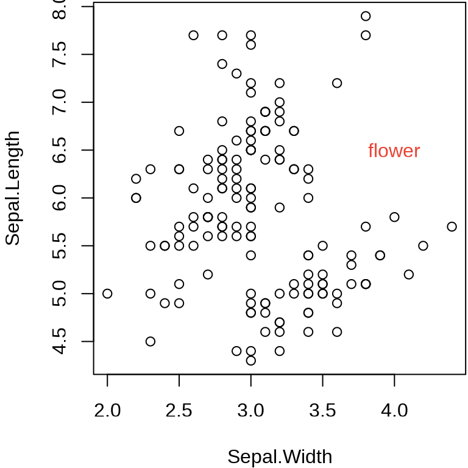
5.1.7 图例
函数 plot() 不会自动添加图例，需要使用函数 legend() 添加图例。
plot(Sepal.Length ~ Sepal.Width, data = iris, col = Species, pch = 16)
legend(x = "topright", title = "Species",
legend = unique(iris$Species), box.col = NA, bg = NA,
pch = 16, col = c("#EA4335", "#4285f4", "#34A853")
)
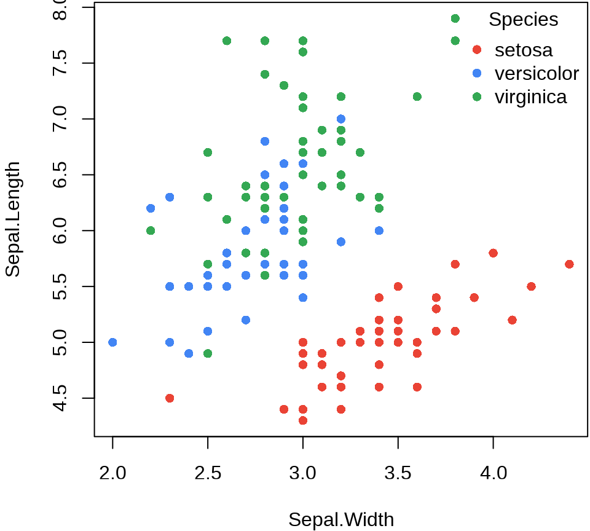
图例放置在绘图区域以外，比如右边空区域。此时，通过点和文本构造图例。
op <- par(mar = c(4, 4, 3, 6))
plot(
Sepal.Length ~ Sepal.Width, data = iris,
col = Species, pch = 16, main = "Edgar Anderson's Iris Data"
)
text(x = 4.7, y = 6.75, labels = "Species", pos = 4, offset = .5, xpd = T)
points(x = 4.7, y = 6.5, pch = 16, cex = 1, col = "#EA4335", xpd = T)
text(x = 4.7, y = 6.5, labels = "setosa", pos = 4, col = "#EA4335", xpd = T)
points(x = 4.7, y = 6.3, pch = 16, cex = 1, col = "#4285f4", xpd = T)
text(x = 4.7, y = 6.3, labels = "versicolor", pos = 4, col = "#4285f4", xpd = T)
points(x = 4.7, y = 6.1, pch = 16, cex = 1, col = "#34A853", xpd = T)
text(x = 4.7, y = 6.1, labels = "virginica", pos = 4, col = "#34A853", xpd = T)
on.exit(par(op), add = TRUE)
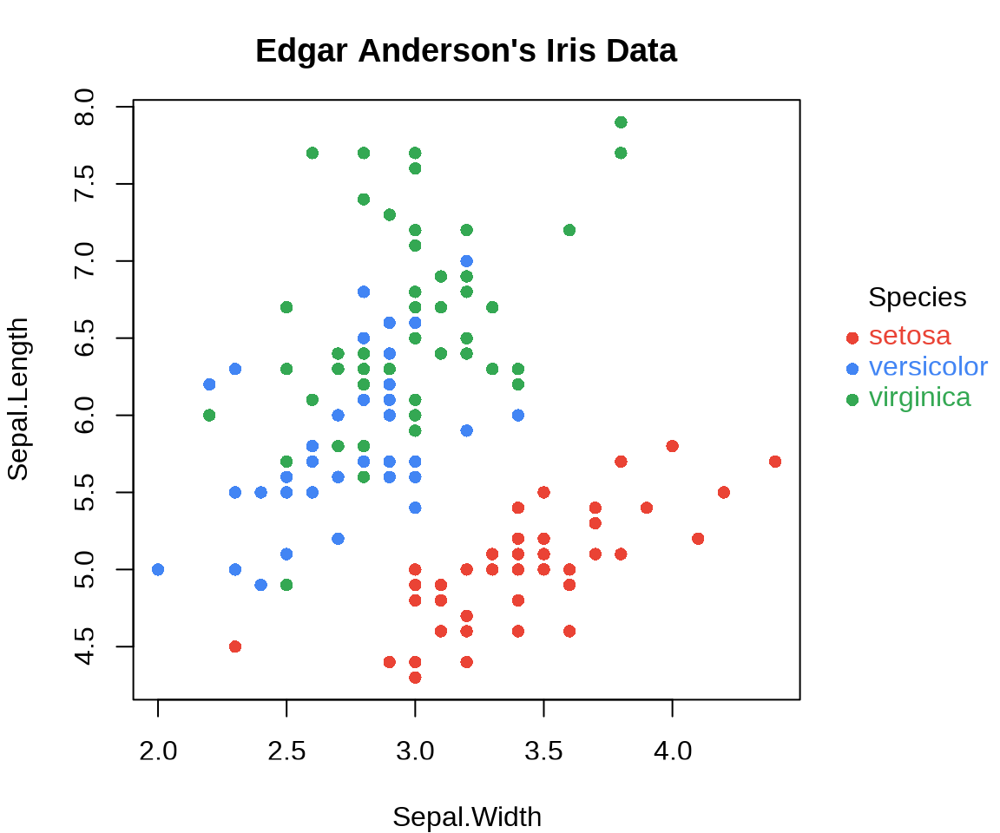
在函数 plot() 内设置较宽的坐标轴范围，获得一个较宽的绘图区域，再用函数 points() 添加数据点，最后，使用函数 legend() 添加图例。
plot(
x = c(2, 6), y = range(iris$Sepal.Length), type = "n",
xlab = "Sepal Width", ylab = "Sepal Length",
main = "Edgar Anderson's Iris Data"
)
points(Sepal.Length ~ Sepal.Width,
col = Species, pch = 16, data = iris
)
legend(x = "right", title = "Species",
legend = unique(iris$Species), box.col = NA, bg = NA,
pch = 16, col = c("#EA4335", "#4285f4", "#34A853")
)
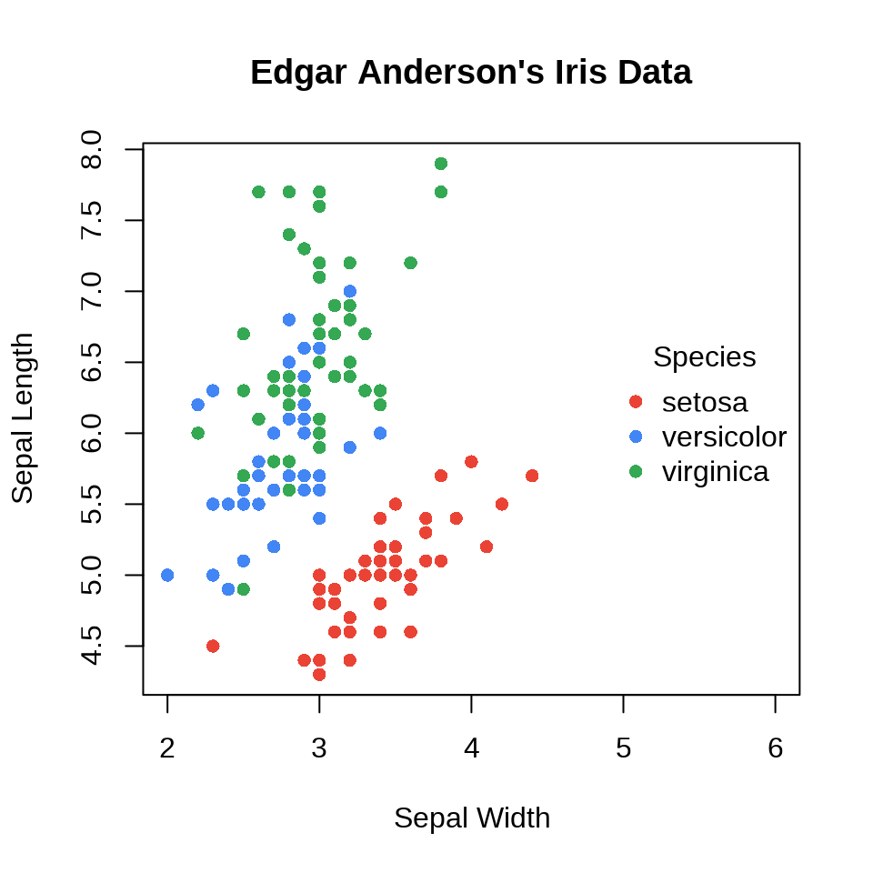
5.1.8 统计
添加分组线性回归线。按鸢尾花种类分组，线性回归模型拟合数据，抽取回归系数。首先，使用函数 split() 将数据集 iris 按变量 Species 分组拆分，得到一个列表，每个元素都是数据框。接着，调用函数 lapply() 将函数 lm() 作用到列表的每个元素上，得到一个列表，每个元素都是线性拟合对象。最后，再调函数 lapply() 将函数 coef() 应用到列表的每个元素上，得到回归模型的系数向量。
lapply(
lapply(
split(iris, ~Species), lm,
formula = Sepal.Length ~ Sepal.Width
),
coef
)
#> $setosa
#> (Intercept) Sepal.Width
#> 2.6390012 0.6904897
#>
#> $versicolor
#> (Intercept) Sepal.Width
#> 3.5397347 0.8650777
#>
#> $virginica
#> (Intercept) Sepal.Width
#> 3.9068365 0.9015345走到绘图这一步，往往是画什么内容比较清楚，分类数量、调色板都确定下来了。大致来说分 6 步：第一步，实现分组线性回归拟合；第二步，绘制分组散点图；第三步，添加分组回归线；第四步，添加图例并调整图例的位置；第五步，设置图形边界等绘图参数；第六步，添加背景网格线。输入线性拟合对象给函数 abline() 可以直接绘制回归线，不需要从拟合对象中提取回归系数。调用函数 par() 设置图形边界，特别是增加图形右侧边界以容纳图例，再调用函数 legend() 要设置 xpd = TRUE 以允许图例超出绘图区域。
# 分组线性拟合
iris_lm <- lapply(
split(iris, ~Species), lm, formula = Sepal.Length ~ Sepal.Width
)
# 将分组变量和颜色映射
cols <- c("setosa" = "#EA4335", "versicolor" = "#4285f4", "virginica" = "#34A853")
# 设置图形边界以容纳标签和图例
op <- par(mar = c(4, 4, 3, 8))
# 绘制分组散点图
plot(
Sepal.Length ~ Sepal.Width,
data = iris, col = Species, pch = 16,
xlab = "Sepal Width", ylab = "Sepal Length",
main = "Edgar Anderson's Iris Data"
)
# 添加背景参考线
grid()
# 添加回归线
for (species in c("setosa", "versicolor", "virginica")) {
abline(iris_lm[[species]], col = cols[species], lwd = 2)
}
# 添加图例
legend(
x = "right", title = "Species", inset = -0.4, xpd = TRUE,
legend = unique(iris$Species), box.col = NA, bg = NA, lty = 1, lwd = 2,
pch = 16, col = c("#EA4335", "#4285f4", "#34A853")
)
# 恢复图形参数设置
on.exit(par(op), add = TRUE)
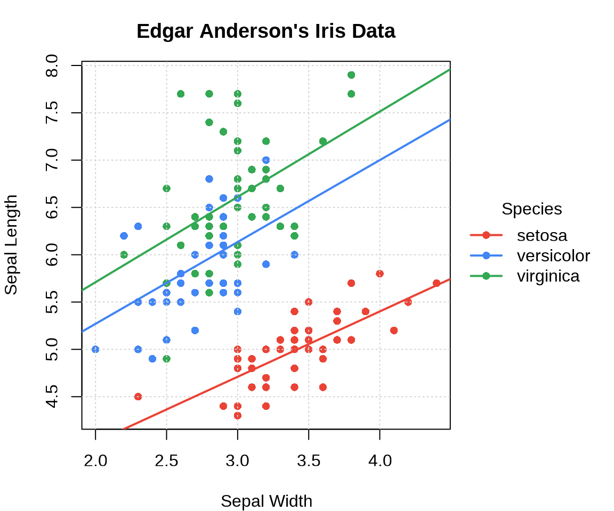
5.2 绘图进阶
5.2.1 组合图形
点、线、多边形组合
x <- seq(-10, 10, length = 400)
y1 <- dnorm(x)
y2 <- dnorm(x, m = 3)
op <- par(mar = c(5, 4, 2, 1))
plot(x, y2,
xlim = c(-3, 8), type = "n",
xlab = quote(Z == frac(mu[1] - mu[2], sigma / sqrt(n))),
ylab = "Density"
)
polygon(c(1.96, 1.96, x[240:400], 10),
c(0, dnorm(1.96, m = 3), y2[240:400], 0),
col = "grey80", lty = 0
)
lines(x, y2)
lines(x, y1)
polygon(c(-1.96, -1.96, x[161:1], -10),
c(0, dnorm(-1.96, m = 0), y1[161:1], 0),
col = "grey30", lty = 0
)
polygon(c(1.96, 1.96, x[240:400], 10),
c(0, dnorm(1.96, m = 0), y1[240:400], 0),
col = "grey30"
)
legend(x = 4.2, y = .4,
fill = c("grey80", "grey30"),
legend = expression(
P(abs(Z) > 1.96, H[1]) == 0.85,
P(abs(Z) > 1.96, H[0]) == 0.05
), bty = "n"
)
text(0, .2, quote(H[0]:~ ~ mu[1] == mu[2]))
text(3, .2, quote(H[1]:~ ~ mu[1] == mu[2] + delta))
on.exit(par(op), add = TRUE)
5.2.2 多图布局
布局函数 layout() 和图形参数设置函数 par()
data(anscombe)
form <- sprintf("y%d ~ x%d", 1:4, 1:4)
fit <- lapply(form, lm, data = anscombe)
op <- par(mfrow = c(2, 2), mgp = c(2, 0.7, 0),
mar = c(3, 3, 1, 1) + 0.1, oma = c(0, 0, 2, 0))
for (i in 1:4) {
plot(as.formula(form[i]),
data = anscombe, col = "black",
pch = 20, xlim = c(3, 19), ylim = c(3, 13),
xlab = as.expression(substitute(x[i], list(i = i))),
ylab = as.expression(substitute(y[i], list(i = i))),
family = "sans"
)
abline(fit[[i]], col = "black")
text(
x = 7, y = 12, family = "sans",
labels = bquote(R^2 == .(round(summary(fit[[i]])$r.squared, 3)))
)
}
mtext("数据集的四重奏", outer = TRUE)
on.exit(par(op), add = TRUE)
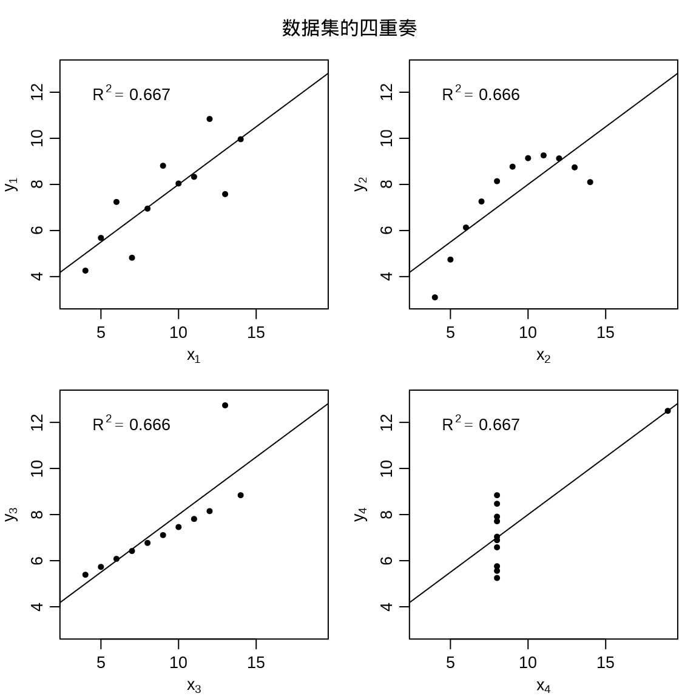
5.3 图形选择
以不同的二维或三维图形可视化同一份多元数据。颜色图、透视图、等值线图和填充等值线图存在某种相似性，又有区别。
5.3.1 颜色图
\[ f(x,y) = \begin{cases} \frac{\sin(\sqrt{x^2 + y^2})}{\sqrt{x^2 + y^2}}, & (x,y) \neq (0,0)\\ 1, & (x,y) = (0,0) \end{cases} \]
y <- x <- seq(from = -8, to = 8, length.out = 51)
z <- outer(x, y, FUN = function(x, y) sin(sqrt(x^2 + y^2)) / sqrt(x^2 + y^2))
z[26, 26] <- 1将绘图区域划分成网格，每个小网格对应一个颜色值。函数 image() 绘制颜色图
image(x = x, y = y, z = z, xlab = "$x$", ylab = "$y$")
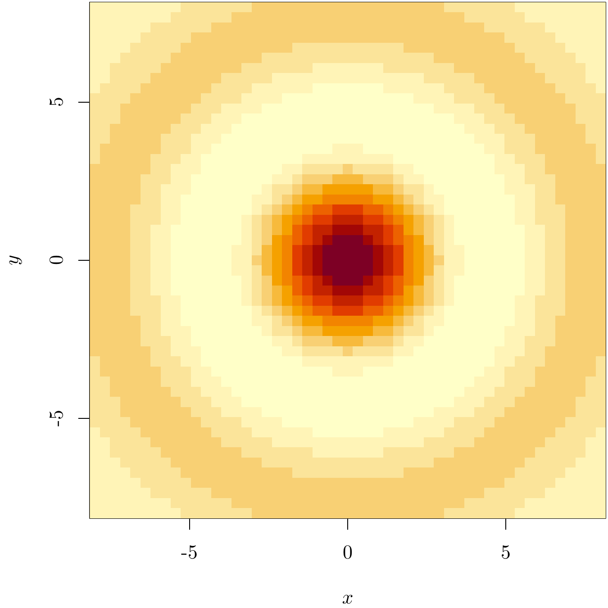
5.3.2 透视图
函数 persp() 绘制透视图
op <- par(mar = c(0, 1, 2, 1))
persp(
x = x, y = y, z = z, main = "二维函数的透视图",
theta = 30, phi = 30, expand = 0.5, col = "lightblue",
xlab = "$x$", ylab = "$y$", zlab = "$f(x,y)$"
)
on.exit(par(op), add = TRUE)
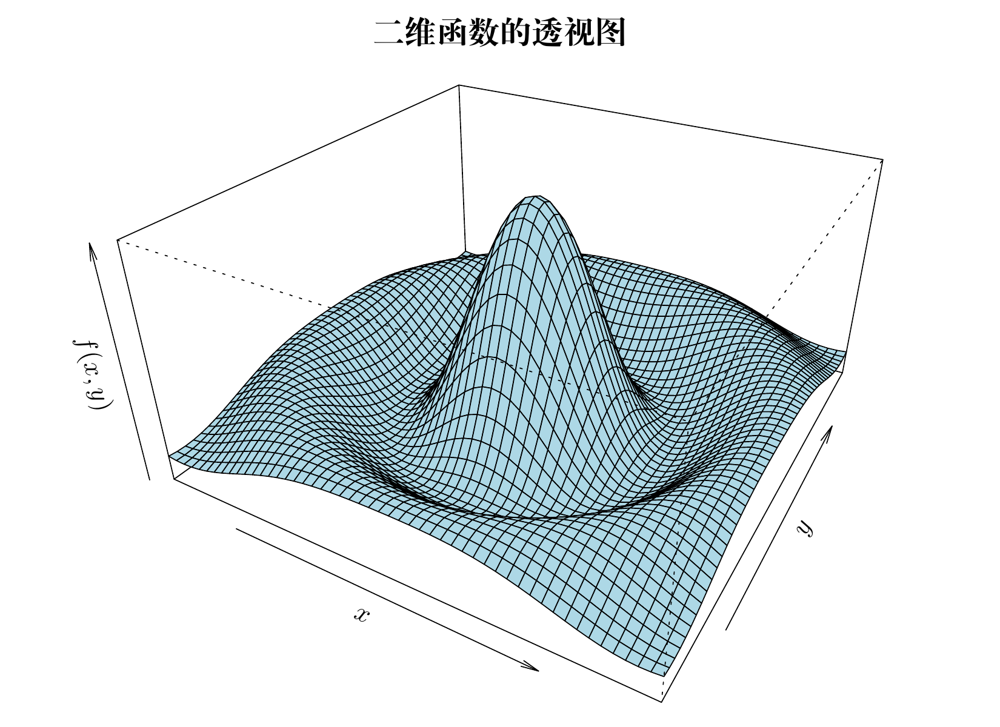
5.3.3 等值线图
地理上，常用等高线图描述地形，等高线图和等值线图其实是一个意思。函数 contour() 绘制等值线图。
contour(x = x, y = y, z = z, xlab = "$x$", ylab = "$y$")
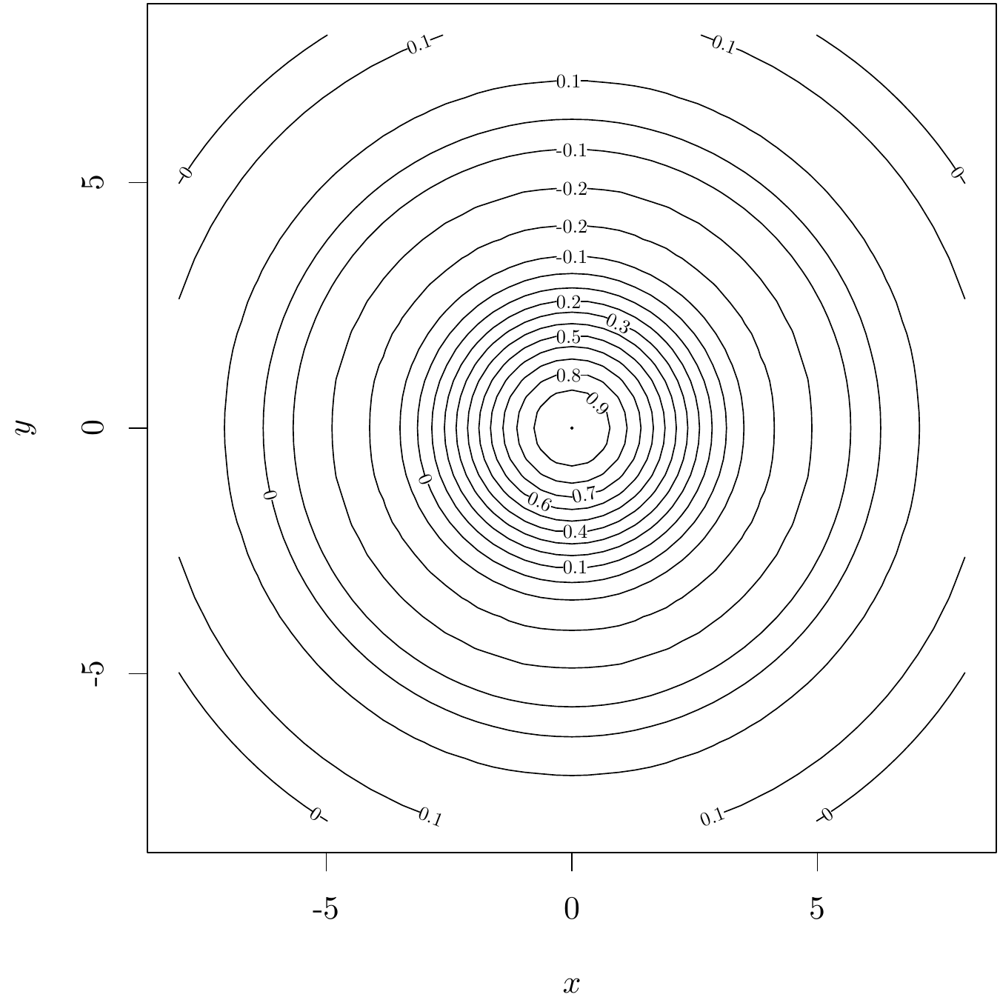
5.3.4 填充等值线图
函数 filled.contour() 绘制填充等值线图。
filled.contour(
x = x, y = y, z = z, asp = 1,
color.palette = hcl.colors,
plot.title = {
title(
main = "二维函数的填充等值线图",
xlab = "$x$", ylab = "$y$"
)
},
plot.axes = {
grid(col = "gray")
axis(1, at = 2 * -4:4, labels = 2 * -4:4)
axis(2, at = 2 * -4:4, labels = 2 * -4:4)
points(0, 0, col = "blue", pch = 16)
},
key.axes = {
axis(4, seq(-0.2, 1, length.out = 9))
}
)
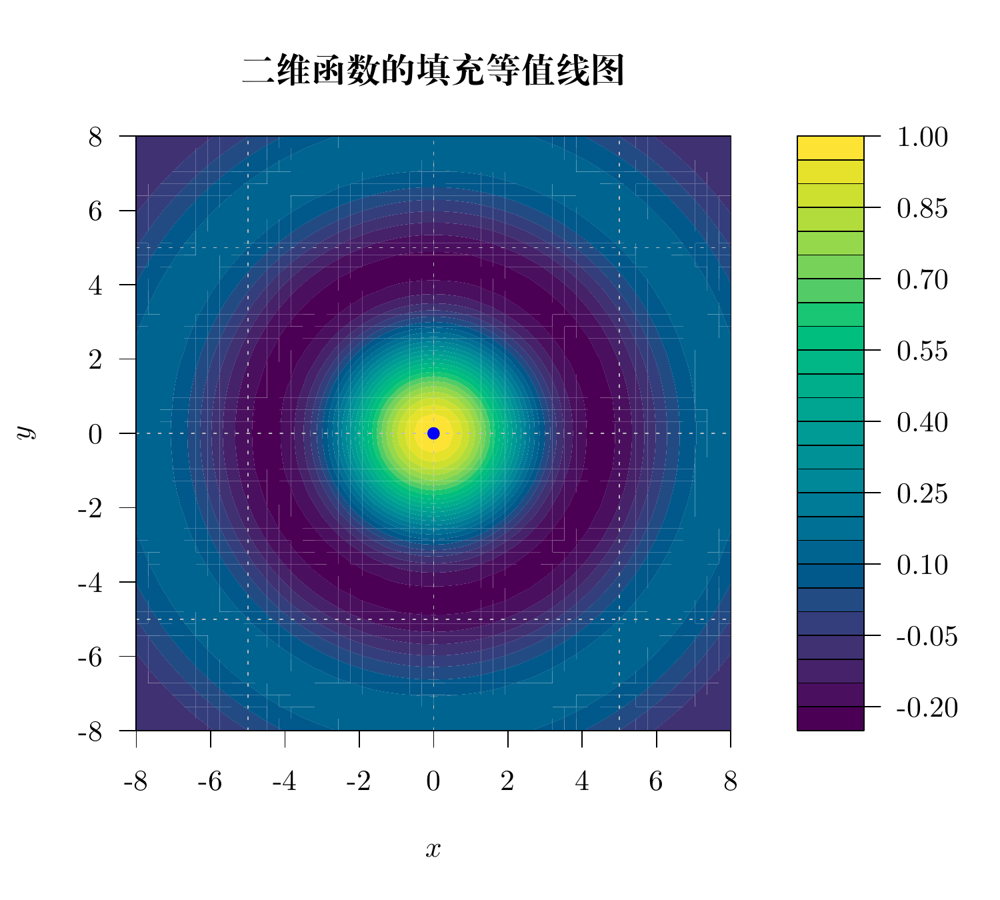
5.4 总结
5.4.1 tinyplot 包
tinyplot 包扩展 Base R 函数 plot() 的功能，在公式语法方面和 lattice 包很接近。另一个值得一提的 R 包是 basetheme ，用来设置 Base R 绘图主题。
library(tinyplot)
tinyplot(Sepal.Length ~ Sepal.Width | Species, data = iris,
palette = "Tableau 10", pch = 16)
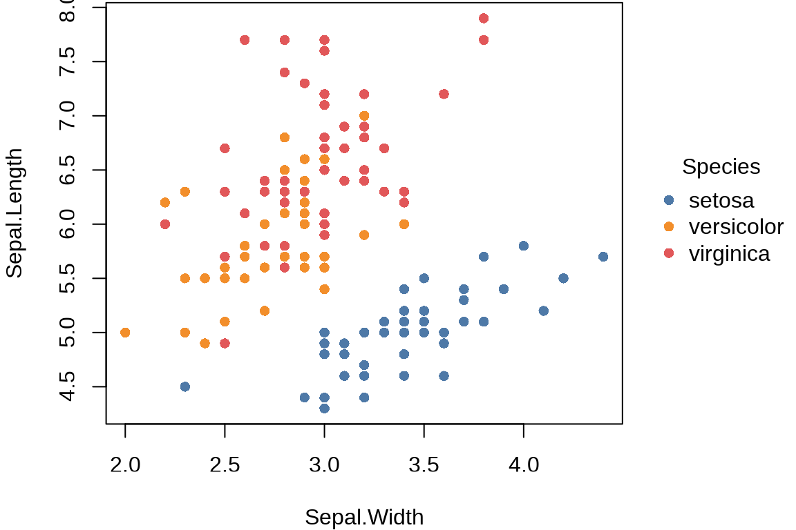
或者使用参数 by 指定分组变量，效果和上图一样。
with(iris, {
tinyplot(y = Sepal.Length, x = Sepal.Width, by = Species,
palette = "Tableau 10", pch = 16)
})还可以使用参数 legend 调整图例的位置，比如放置在绘图区域下方。
op <- par(mar = c(5, 4, .5, .5))
tinyplot(Sepal.Length ~ Sepal.Width | Species,
data = iris, palette = "Tableau 10", pch = 16,
legend = legend("bottom!", title = "Species of iris", bty = "o")
)
on.exit(par(op), add = TRUE)
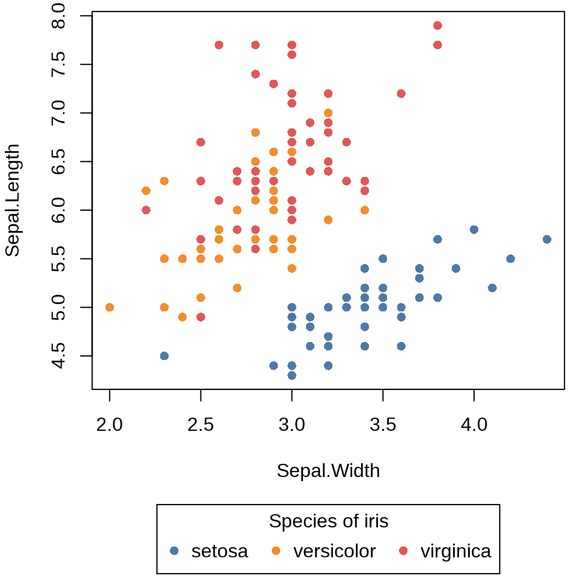
还可以绘制其它类型的图形，如分组密度曲线图、分面散点图等。
tinyplot(
~ Petal.Length | Species, data = iris,
type = "density",
fill = "by", # 分组填充
grid = TRUE, # 背景网格
palette = "Tableau 10"
)
tinyplot(
Petal.Width ~ Petal.Length | Sepal.Length, data = iris,
facet = ~ Species, # 分面
grid = TRUE, pch = 19, frame = TRUE,
palette = terrain.colors # 生成调色板的函数指定配色
)
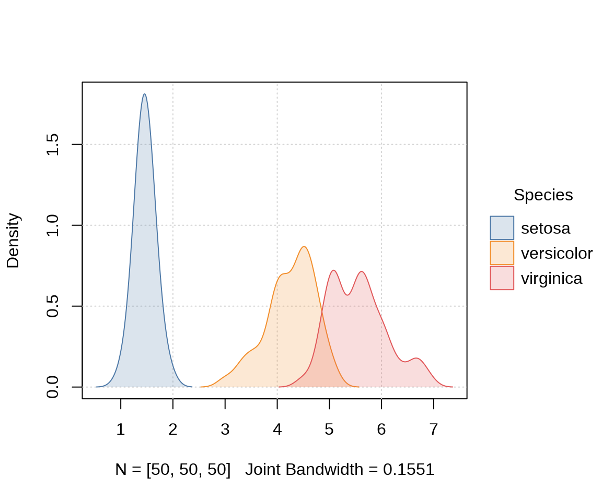
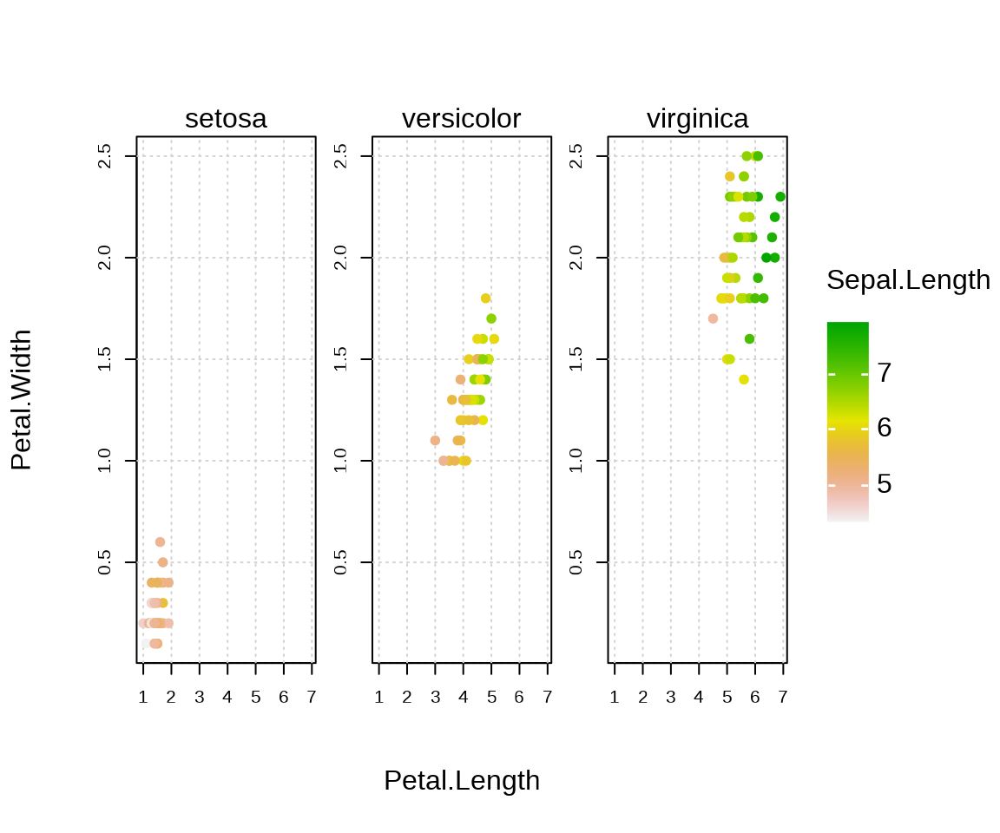
5.4.2 plot3D 包
虽然不提倡大量使用三维图形，但如何绘制三维图形却是生生不息的命题，以下仅是 R 语言社区的冰山一角。
- plotrix (Lemon 2006) 一个坐落于 R 的红灯区的 R 包。基于 Base R 各类绘图函数。
- scatterplot3d (Ligges 和 Mächler 2003) 基于 Base R 绘制三维散点图。
- misc3d (Feng 和 Tierney 2008) 绘制三维图形的杂项，支持通过 Base R、 tcltk 包和 rgl 包渲染图形。
- plot3D (Soetaert 2021) 依赖 misc3d 包，加强 Base R 在制作三维图形方面的能力。
举个比较新颖的一个例子，plot3D 包的函数 image2D() 绘制二维颜色图，细看又和 image() 函数不同，渲染出来的图形有三维的立体感。归根结底，很多时候束缚住自己的不是工具，而是视野和思维。以奥克兰 Maunga Whau 火山地形数据 volcano 为例。
library(plot3D)
image2D(volcano,
shade = 0.2, rasterImage = TRUE, asp = 0.7,
xlab = "南北方向", ylab = "东西方向",
main = "奥克兰 Maunga Whau 地形图", clab = "高度",
contour = FALSE, col = hcl.colors(100),
colkey = list(
at = 90 + 20 * 0:5, labels = 90 + 20 * 0:5,
length = 1, width = 1
)
)
op <- par(mar = c(1, 1.5, 0, 0))
persp3D(
x = 1:87, y = 1:61, z = volcano, col = hcl.colors(100),
ticktype = "detailed", colkey = FALSE, expand = 1,
phi = 35, theta = 125, bty = "b2", shade = TRUE,
ltheta = 100, lphi = 45,
xlab = "\n南北方向", ylab = "\n东西方向", zlab = "\n高度"
)
on.exit(par(op), add = TRUE)
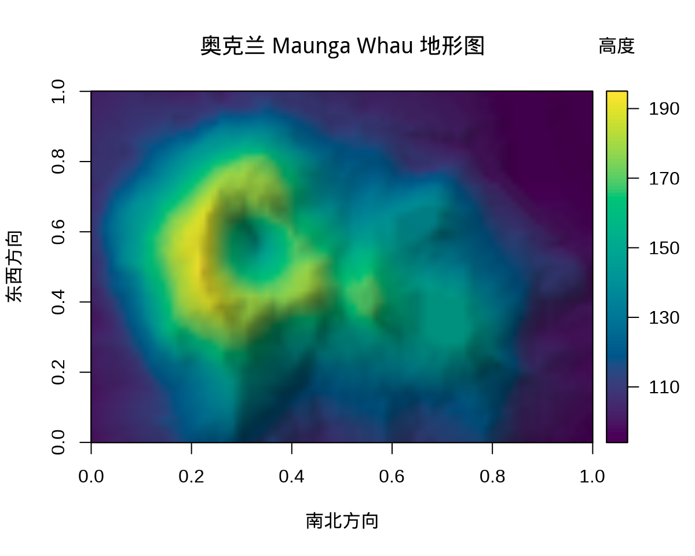
image2D() 二维颜色图
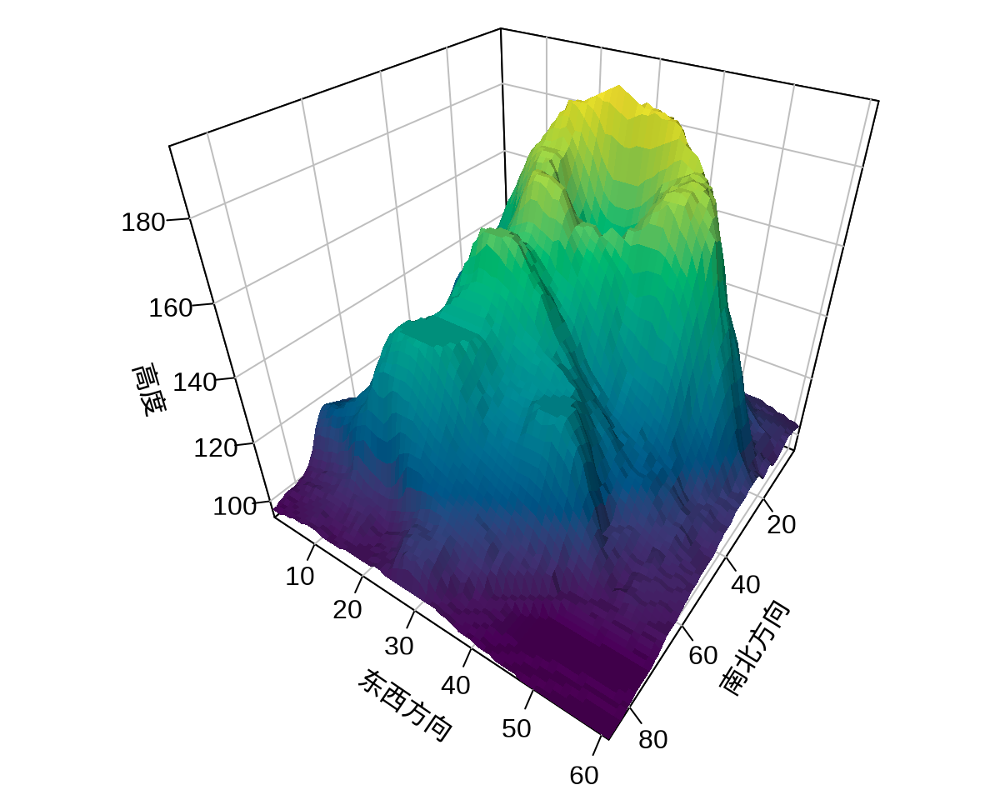
persp3D() 三维透视图
值得一提，Python 社区的绘图模块 matplotlib 同样具有强大的绘图能力，三维图形也不在话下。不过，不同的绘图系统所采用的透视法不同，如下图所示。
代码
from matplotlib import cm
from matplotlib.colors import LightSource
import matplotlib.pyplot as plt
import numpy as np
import pandas as pd
# 设置 PGF 后端渲染图形
import matplotlib as mpl
mpl.use("pgf")
# XeLaTeX 编译图形
plt.rcParams.update({
"text.usetex": True,
"pgf.texsystem": "xelatex",
"pgf.rcfonts": False, # don't setup fonts from rc parameters
"pgf.preamble": "\n".join([
r"\usepackage[fontset=fandol,UTF8]{ctex}",
]),
})
# 读取数据
volcano = pd.read_csv("data/volcano.csv", header=None)
# DataFrame 转 Array
z = volcano.to_numpy().transpose()
# 数据行、列数
ncols, nrows = z.shape
# 线性序列
x = np.linspace(0, 86, nrows)
y = np.linspace(0, 60, ncols)
# 类似 R 语言函数 expand.grid()
xv, yv = np.meshgrid(x, y)
# 设置主题
fig, ax = plt.subplots(subplot_kw=dict(projection="3d"))
# 观察视角
ax.view_init(azim=30, elev=30)
# 设置坐标轴标签
ax.set_xlabel(r"南北方向", rotation=45)
ax.set_ylabel(r"东西方向", rotation=-15)
ax.set_zlabel(r"高度", rotation=90)
# 去掉多余的边空
fig.set_tight_layout(True)
# 光源照射的角度
ls = LightSource(270, 45)
# 自定义调色板
rgb = ls.shade(z, cmap=cm.viridis, vert_exag=0.1, blend_mode="soft")
# 三维透视图
surf = ax.plot_surface(
xv, yv, z, rstride=1, cstride=1, facecolors=rgb,
linewidth=0, antialiased=False, shade=False
)
# 渲染
plt.show()
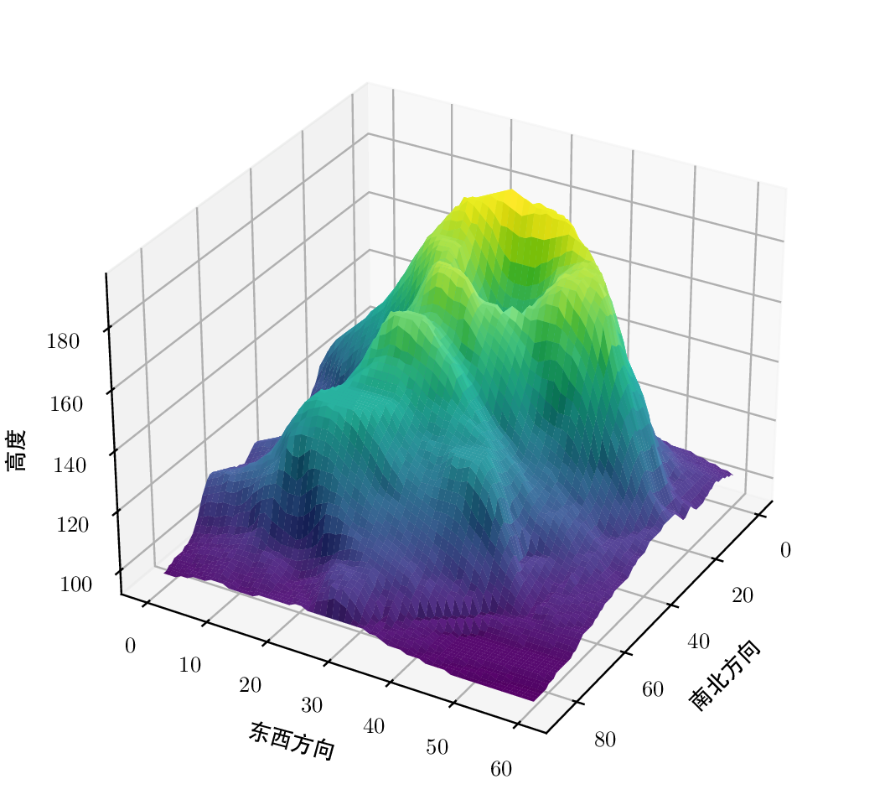